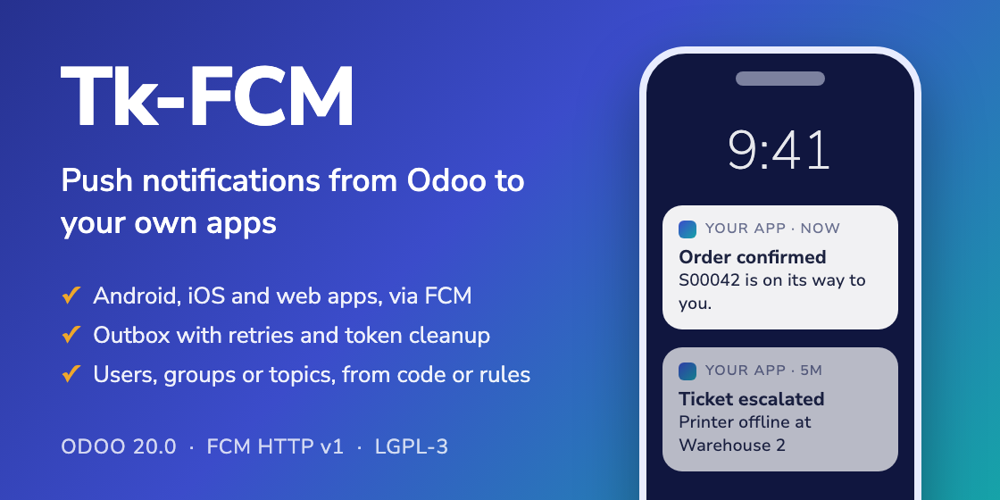

Firebase Cloud Messaging (HTTP v1) for Odoo 20. Your app registers its FCM token against the signed-in user; your Odoo code, an Automation Rule or another system then notifies users, groups or FCM topics in one call.
Odoo 20.0 Community & Enterprise No extra Python packages LGPL-3

Sending only writes outbox rows in the current transaction. A rollback notifies nobody; a commit wakes a cron that delivers within moments.
Transient FCM errors are retried with exponential backoff, honouring Retry-After. Dead tokens deactivate their device and cancel what was queued for it.
Notify every device of some users, of a group or of contacts with a login, or send once to an FCM topic and reach app users who have no Odoo account.
When a user signs out, or a token moves to another user, deliveries still queued for that device are cancelled. The next person never sees the previous user's notifications.
One delivery row per device with its state, attempts and FCM error code. Link notifications to the record that caused them, retry failed ones from the list.
Dry Run has FCM validate every message and deliver none: turn it on in databases restored from production. Test Connection checks credentials without notifying anyone.
tk.push.device.register), on every start and whenever the token changes.send(). Each notification becomes one delivery per active device, written in the same transaction.Add tk_pushnotification to your module's depends:
def action_confirm(self):
res = super().action_confirm()
for order in self:
order.user_id._tk_push_send(
"Order confirmed",
f"{order.name} for {order.partner_id.name}",
data={'model': 'sale.order', 'id': order.id}, # read by the app
record=order, # linked for auditing
link_url=f"/my/orders/{order.id}",
)
return resAction Execute Code:
for rec in records:
rec.user_id._tk_push_send("Ticket escalated", rec.name, data={'id': rec.id})curl -X POST https://odoo.example.com/json/2/tk.push.notification/send \
-H "Authorization: bearer $ODOO_API_KEY" -H "Content-Type: application/json" \
-d '{"users": [7, 12], "title": "Report ready", "body": "Q3 sales", "data": {"report": "q3"}}'
Options include data, image_url, link_url, priority,
ttl, collapse_key and per-platform overrides for Android, Apple and web,
validated against FCM's limits before anything is queued.
GOOGLE_APPLICATION_CREDENTIALS. No secret in the database.
This module sends data to Google. Notifications are delivered through
Firebase Cloud Messaging, a Google service, using a Firebase project and credentials
that you provide. For each delivery Odoo sends to
fcm.googleapis.com: the device's FCM registration token or the topic name,
and the notification's title, body, image URL, link and data. To authenticate, it
obtains access tokens from Google (oauth2.googleapis.com, or the Google
Cloud metadata server when Odoo runs there). Google processes this data under the
terms of your Firebase project.
Nothing is sent until you configure a provider. Devices are registered only by your app, for its signed-in user: have the app register once the user has allowed notifications, and unregister it on sign-out. The module collects no usage statistics and sends nothing to TerraKernel or any other party.
Tk-FCM is free and open source (LGPL-3), made by TerraKernel. The full documentation, including delivery semantics, all send options and per-platform payloads, is in the README of the module's source repository.